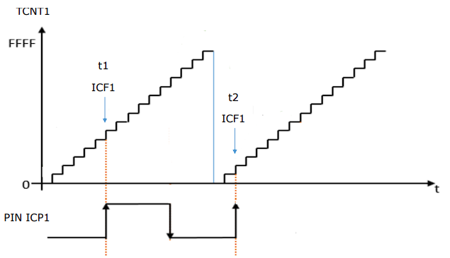
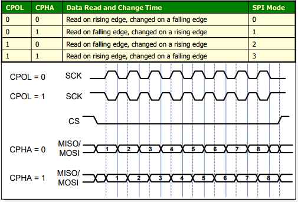

Registro IMSK

Registro EICRA
In the C programming language, static is used with global variables and functions to set their scope to the containing file. In local variables, static is used to store the variable in the statically allocated memory instead of the automatically allocated memory. While the language does not dictate the implementation of either type of memory, statically allocated memory is typically reserved in the data segment of the program at compile time, while the automatically allocated memory is normally implemented as a transient call stack.
The qualifier const can be applied to the declaration of any variable to specify that its value will not be changed (Which depends upon where const variables are stored, we may change the value of const variable by using pointer).
The volatile keyword is intended to prevent the compiler from applying any optimizations on objects that can change in ways that cannot be determined by the compiler. Their values can be changed by code outside the scope of current code at any time. The system always reads the current value of a volatile object from the memory location rather than keeping its value in temporary register at the point it is requested, even if a previous instruction asked for a value from the same object. Use cases:
Registers are faster than memory to access, so the variables which are most frequently used in a C program can be put in registers using register keyword. The keyword register hints to compiler that a given variable can be put in a register. It’s compiler’s choice to put it in a register or not. Generally, compilers themselves do optimizations and put the variables in register.
The C preprocessor, often known as cpp, is a macro processor that is used automatically by the C compiler to transform your program before compilation. It is a text substitution tool. Las directivas para el preprocesador comienzan con el simbolo #.
C supports a large number of string handling functions that can be used to carry out many of the string manipulations. These functions are packaged in the string.h library.
In C programming language, variables defined within some function are known as Local Variables and variables which are defined outside of function block and are accessible to entire program are known as Global Variables.
Nota: La diferencia entre el AND binario (&) y el AND lógico (&&) es que el primero es una operacion que se realiza a nivel de bit.
A prototype declares the function name, its parameters, and its return type to the rest of the program prior to the function's actual declaration. Many C compilers do not check for parameter matching either in type or count. You can waste an enormous amount of time debugging code in which you are simply passing one too many or too few parameters by mistake. The prototype causes the compiler to check for parameters and flag an error for mismatches on count or type. Prototypes should be placed at the beginning of your program.
Every variable is a memory location, and every memory location has its address defined which can be accessed using ampersand (&) operator, which denotes an address in memory.
int main(){
int var1;
int var2[10];
printf("address of var1 %x",&var1);
printf("address of var2 %x",&var2);
return 0;
}
A pointer is a variable whose value is the address of another variable. Like any variable or constant, you must declare a pointer before using it to store any variable address.
int *ip; //pointer to an integer
char str[10]; //pointer to the first element of str array
int num;
ip= # //puntero a num
printf(ip); //imprimir direccion de num
printf(*ip); //imprimir contenido de num
A structure is another user defined data type available in C that allows combining data items of different kinds. Structures are used to represent a record.
struct Books{
char title[50];
char author[50];
char subject[50];
int id;
}
Books book;
book.title="titulo";
book.author=...
A union is a special data type available in C that allows to store different data types in the same memory location. You can define a union with many members, but only one member can contain a value at any given time. Unions provide an efficient way of using the same memory location for multiple-purpose. To define a union, you must use the union statement in the same way as you did while defining a structure. The union statement defines a new data type with more than one member for your program.
union Data{
int i;
float f;
char str[20];
}data;
Now, a variable of Data type can store an integer, a floating-point number, or a string of characters. It means a single variable, i.e., same memory location, can be used to store multiple types of data. You can use any built-in or user defined data types inside a union based on your requirement.
The memory occupied by a union will be large enough to hold the largest member of the union.
Un módulo puede estar formado por un archivo o una colección de archivos que contienen las funciones que realizan en conjunto la tarea especificada. Los módulos pueden ser verificados y mantenidos por separado, además de que pueden ser desarrollados por un equipo de programadores.
Un módulo bien desarrollado que cumple con una tarea especifica, puede ser separado del resto y puesto en otra aplicación sin problemas. Un módulo puede verse además como una caja negra que presenta una interfaz bien definida (puntos de entrada y puntos de salida) para comunicarse con el resto del mundo.
Las variables globales NO se recomiendan para pasar información de un módulo a otro porque atentan contra la independencia y portabilidad del módulo.
Las interfaces permiten la comunicación entre módulos, determinan la forma de uso de cada uno y garantizan la independencia con el resto del sistema, se implementan mediante los parámetros de entrada de las funciones y los valores de retorno de las mismas.
Ocultar la información que maneja un módulo (por ejemplo los registros del MCU, ciertas variables o funciones) mejora la portabilidad. Este es un concepto básico en la POO (Programación Orientada a Objetos)
Por otro lado, es necesario restringir que módulos acceden al hardware (registros del MCU por ejemplo) y sincronizar los accesos entre los mismos (Mecanismos de sincronización de tareas). Una forma de conectar los módulos es en forma jerárquica (De mayor abstracción a menor abstracción (más cercano al hardware)).
Un módulo (o varios) que controlan el funcionamiento de un dispositivo de hardware constituye un “device driver” . Este contiene el conjunto de funciones necesarias para utilizar un dispositivo particular y provee al usuario una interfaz de comunicación estándar del tipo “open()”,“close()”, “ctr()”, “read()” y “write()”.
De esta manera un programa completo puede dividirse en un conjunto de archivos que implementan tareas bien definidas, con reglas claras en el control de acceso a los recursos que manejan y con una interfaz de comunicación bien definida con el resto del mundo.
/*======Evitar inclusión múltiple - begin======*/
#ifndef _NOMBRE_MODULO_H_
#define _NOMBRE_MODULO_H_
/*======Inclusión de dependencias de funciones públicas======*/
#include "dependency.h"
#include <dependency.h>
/*======Para compatibilizar el uso de este módulo desde C++======*/
#ifdef __cplusplus
extern "C"{
#endif
/*======Macros de definición de constantes públicas======*/
#define PI 3.14
/*======Macros "function-like"======*/
#define sum(x,y) ((x)+(y))
/*======Definiciones de tipos de datos públicos======*/
typedef void (*callBackFuncPtr_t)(void *);
/*======Declaración de prototipos (funciones públicas)======*/
bool_t rtcInit(rtc_t* rtc);
/*======Declaración de prototipos (funciones de interrupción públicas)======*/
void UART0_IRQHandler(void);
/*======Para compatibilizar el uso de este módulo desde C++======*/
#ifdef __cplusplus
}
#endif
/*======Evitar inclusión múltiple - end======*/
#endif /* _NOMBRE_MODULO_H_ */
/*======Inclusio de cabecera propia======*/
#include "nombreModulo.h"
/*======Inclusión de dependencias de funciones privadas======*/
#include "dependency.h"
/*======Definición de constantes privadas======*/
#define MI_CONSTANTE 9
/*======Macros "function-like" privadas======*/
#define rtcConfig rtcInit
/*======Definición de tipos de datos privados======*/
#typedef void (*FuncPtrPrivado_t)(void *);
/*======Definición de variables globales públicas externas======*/
extern int32_t varGlobalExterna
/*======Definición de variables globales públicas======*/
int32_t varGlobalPublica=0;
/*======Definición de variables globales privadas======*/
static int32_t varGlobalPrivada=0;
/*======Prototipos de funciones privadas======*/
static void funPrivada(void);
/*======Implementaciones de funciones públicas======*/
bool_t rtcInit( rtc_t* rtc){
// ..
}
/*======Implementaciones de manejadores de interrupciones públicos======*/
void UART0_IRQHandler(void){
// ..
}
/*======Implementaciones de funciones privadas======*/
static void funPrivada(void){
// ..
}
Un cambio en el hardware o en el pin out de la placa donde corre la aplicación, se modificará solo en este archivo y no debería afectar el resto de los módulos.
Permite definir las interfaces de entrada y salida de la aplicación en particular. Por ejemplo, definiciones de los terminales en las placas arduino X.
Los comentarios deben tratar de contener la siguiente información:
short int SetPoint; /* Especifica la temperatura deseada para el lazo de control de temperatura. Precisión de 16 bits y en un rango de -55 a +125ºC*/
/***********************************************************************
* Propósito de la función: . . .
* Parámetros de entrada (tipo, rango y formato) : . . .
* Parámetros de salida (tipo, rango y formato) : . . .
* Condiciones de Error de la función (poner ejemplos si hace falta) : . . .
* Macros y su significado : . . .
* Otros comentarios: Autor, fecha y log de modificaciones, etc
***********************************************************************/
int FuncionSuma (int, int);
PORTA, TRUE, NULL, FREQ_CPU, PIMax, Min, BufferTxmaxTemp, errorCntMaxTemp, ErrorCntADC_Channel, LCD_ErrorCntClearTime(), Get_Char()TIMER_ClearTime(), KEPAD_Get_Char()| Atmega328P | Atmega2560 | |
|---|---|---|
| Perifericos |
|
|
| RAM | 2K Bytes | 8K Bytes |
| Flash | 32K Bytes | 256K Bytes |

Para controlar los puertos de entrada salida se utilizan los registros:
La CPU de un microcontrolador ejecuta instrucciones secuencialmente, sin embargo, las aplicaciones requieren del uso de diferentes periféricos (internos o externos) y por lo tanto la CPU debe contar con un mecanismo para interactuar con ellos y dar respuesta adecuada a sus demandas.
Los periféricos generalmente requieren la atención de la CPU de manera aleatoria en respuesta a algún evento. Para poder detectar estos eventos, la alternativa mas simple es la consulta o polling, en la que el CPU debe encargarse "manualmente" de preguntar al dispositivo si se produjo un evento que requiera su atencion. Esto es poco eficiente ya que gastamos ciclos de ejecucion del CPU en esperar a que se produzca un evento.
Un enfoque distinto es permitir al dispositivo que avise a la CPU solo cuando requiera su atencion. De esta manera la CPU se independiza del dispositivo y puede utilizar esos ciclos de ejecucion que gastaba esperando en otra tarea mas productiva. Para esto se utilizan las interrupciones.
Una interrupción es la ocurrencia de un evento producido por algún recurso del microcontrolador, que ocasiona la suspensión temporal del programa principal. La CPU atiende al evento con una función conocida como rutina de servicio a la interrupción (ISR, Interrupt Service Routine). Una vez que la CPU concluye con las instrucciones de la ISR, continúa con la ejecución del programa principal, regresando al punto en donde fue suspendida su ejecución.
El núcleo AVR cuenta con la unidad de interrupciones, un módulo que va a determinar si se tienen las condiciones para que ocurra una interrupción. Son tres las condiciones necesarias para que un recurso produzca una interrupción:
SREG) debe estar activadoCuando el microcontrolador se enciende o reinicia, las interrupciones no están habilitadas, su habilitación requiere la puesta en alto del bit I de SREG y de los habilitadores individuales de los periféricos incorporados en el microcontrolador.
Al generarse una interrupción, el PC es almacenado en la pila de datos y a continuacion toma el valor
de una entrada en el vector de interrupciones (según sea la interrupción). Además de desactivar al bit I para no aceptar más interrupciones y finalizar con la instruccion bajo ejecucion en el momento de la interrupcion.
La ISR debe colocarse en una dirección preestablecida por Hardware, la cual corresponde con un vector de interrupciones.
Una rutina de atención a interrupciones es finalizada con la instrucción RETI, con la
cual el PC recupera el valor del tope de la pila y pone en alto nuevamente al bit I, para
que la CPU pueda recibir más interrupciones. Ademas, se limpia la flag que genero la interrupcion inicialmente.
El grupo de localidades de memoria destinadas a guardar las direcciones de las RSI, se llama “Tabla de Vectores de Interrupción”
El fabricante reserva direcciones de memoria especificas (llamadas vector) para cada interrupción con una determinada prioridad dada por el orden que aparecen en la tabla, en caso que se den varios pedidos de interrupción simultáneamente. El orden (y la prioridad) esta dado por el fabricante.
El fabricante especifica donde disponer de esta tabla, en la mayoría de los uC está al principio de la memoria de programa FLASH o al final.
El mecanismo de vector permite distinguir rápidamente entre múltiples pedidos de interrupción y determinar su origen para ejecutar a la RSI que corresponda. Para cada fuente de interrupción distinta debe existir una sola RSI asociada que pueda ejecutarse. El programador diseña la RSI que desea se ejecute en cada caso como si fuese una función especial.
La inicialización o reset de un microcontrolador es fundamental para su operación adecuada, porque garantiza que sus registros internos van a tener un valor inicial conocido. Existen varias causas de RESET:
NOTA: JTAG hace referencia a una interfaz serial utilizada para la prueba de circuitos integrados y como medio para depurar sistemas empotrados
Puesto que hay diferentes causas de reinicio, los AVR incluyen al Registro de Estado
y Control del MCU (MCUCSR) en el cual queda indicada la causa de reset por medio de una bandera. Los bits del registro MCUCSR son:
Es el tiempo que tarda el Controlador de interrupciones en dar respuesta a una interrupción, se mide desde que se recibe el pedido hasta que efectivamente se ejecuta la primer instrucción de la RSI correspondiente.
En los AVR la latencia es de 4 ciclos de reloj como mínimo, durante este tiempo, se guarda el PC en la pila, se pone el bit I de SREG en 0 (desactiva la recepcion de otras interrupciones) y se busca el vector de
interrupción de mayor prioridad que corresponda.
En el caso en que el micro este en modo SLEEP, la latencia es de 8 ciclos.
El retorno de la interrupción (RETI) tambien lleva 4 ciclos.
El anidamiento de interrupciones se da cuando una interrupcion puede interrumpir la rutina de atencion de otra interrupcion. Esto no esta permitido por defecto ya que al atender una rutina se desactivan las interrupciones, sin embargo puede permitirse este comportamiento manualmente si dentro de la rutina se vuelven a habilitar. Una interrupcion en curso solo puede ser interrumpida por otra interrupcion de mayor prioridad.
El anidamiento de interrupciones no es recomendable ya que imposibilita la creacion de codigo que se ajuste bien a todas las combinaciones de interrupciones, reduciendo la posibilidad de predecir el comportamiento del sistema, es decir, se pierde confiabilidad ya que no se pueden testear todas las condiciones.
Las interrupciones externas sirven para detectar un estado lógico o un cambio de estado en alguna de las terminales de entrada de un microcontrolador, con su uso se evita un sondeo continuo en la terminal de interés. Son útiles para monitorear interruptores, botones o sensores con salida a relevador.
En el ATMEGA328p hay dos terminales que pueden generar interrupciones de periféricos externos:
Estas interrupciones se habilitan con el registro EIMSK – External Interrupt Mask Register. El tipo de activacion es configurable mediante el registro EICRA.
Registro IMSK
Registro EICRA
Las interrupciones externas pueden configurarse para detectar un nivel bajo de voltaje o una transición, ya sea por un flanco de subida o de bajada
Si una interrupción funciona por nivel el periférico que la genera “coloca y mantiene” el nivel en la línea para que el uC atienda a esa petición. Durante la atención, el uC debería indicar al periférico externo, de algún modo, que ha sido atendido para que éste libere el nivel de la línea.
Por lo tanto, las interrupciones por nivel no tienen memoria y requieren de un aviso al periférico para que no se procese la misma interrupción múltiples veces.
Si una interrupción funciona por flanco quiere decir que el periférico produce un flanco en la línea y este pedido queda registrado en un Flag (Flip Flop) pidiendo interrupción. Típicamente el uC borra este flag para indicar que esta interrupción ya ha sido atendida sin necesidad de comunicárselo al periférico.
De esta manera, si las interrupciones están deshabilitas al momento de producirse el flanco, los pedidos quedan “pendientes” y serán atendidos por prioridad cuando se active la máscara de interrupción I.

Activacion por Nivel.

Activacion por Flanco. No hay Acknowledge.
A diferencia de las interrupciones INT0 e INT1 que son capaces de distingar nivel alto, nivel bajo, flanco de subida y flanco de bajada, este tipo de interrupciones se disparan ante cualquier cambio de nivel sin distinguir el sentido.
Los interrupciones Pin Change son habilitadas con el registro PCICR, y se habilitan para grupos de pines.

| Vector No. | Program Address | Source | Interrupt Definition |
|---|---|---|---|
| 4 | 0x0006 | PCINT0 | Pin change interrupt request 0 | 5 | 0x0008 | PCINT1 | Pin change interrupt request 1 | 6 | 0x000A | PCINT2 | Pin change interrupt request 2 |
Una de las características mas destacables de un MCU es la capacidad de realizar tareas temporizadas, para esto cuentan con un periférico TIMER o TEMPORIZADOR.
Algunas de las aplicaciones pueden ser:
Timer/Counter0 es un modulo Timer/Counter de 8 bits de proposito general, con dos unidades de output-compare independientes, y con soporte para PWM. Permite programar tareas de forma temporizada (event management) y generación de ondas.

El Timer/Counter incrementa (o decrementa) el valor de TCNT0 hasta alcanzar el valor TOP (o BOTTOM). Cuando se alcanza, se reinicia el valor TCNT0 a BOTTOM (o TOP) y se levanta el flag TOV0 (overflow).
La frecuencia de overflow puede calcularse como $f_{OVF} = \frac{f_{clkT_0}}{2^8}$
El tiempo de overflow puede calcularse como $T_{OVF} = \frac{1}{f_{OVF}}$
La resolución de temporización puede calcularse como $T_{clkT_0} = \frac{1}{f_{clkT_0}}$
El Timer/Counter incrementa (o decrementa) el valor de TCNT0 hasta alcanzar el valor OCR0. Cuando se alcanza, se reinicia el valor TCNT0 a BOTTOM (o OCR0) y se levanta el flag OC0. También puede configurarse para invertir el pulso en el pin OC0 (waveform generation).
Pulse Width Modulation es una técnica de modulación digital donde la información útil de la señal se encuentra en el ancho del pulso. Esto permite que se pueda obtener una señal analógica a partir de una señal digital, y controlar dispositivos analogicos por medio de salidas digitales.
El Atmega328P cuenta con un sistema de preescalado de reloj que se utiliza para dividir la frecuencia del reloj y obtener una menor, permitiendo bajar el consumo de energía cuando el requisito de poder de procesamiento es bajo. Este sistema también puede usarse para suministrar señal de reloj a los distintos dispositivos.
El Timer/Counter puede recibir la señal de clock del reloj del sistema ($f_{CLK_I/O}$), esto permite la velocidad de operacion más rápida. Alternativamente, puede recibir la señal de clock de una de las 4 alternativas del preescalador. Las frecuencias del preescalador son:
$$\frac{f_{CLK_I/O}}{8}$$ $$\frac{f_{CLK_I/O}}{64}$$ $$\frac{f_{CLK_I/O}}{256}$$ $$\frac{f_{CLK_I/O}}{1024}$$
El prescaler funciona independientemente de la lógica de Clock select, y es compartido por el Timer/Counter1 y el Timer/Counter0.

Una Máquina de Estados Finitos (MEF) es un modelo abstracto del “comportamiento” del sistema, basado en principio simples.
Una Máquina de Estados Finitos (MEF) es un modelo matemático (Teoría general de autómatas) usado para describir el comportamiento de un sistemas que puede ser representado por un número finito de estados, un conjunto de entradas y una función de transición que determina el estado siguiente en función del estado actual y de las entradas.
El modelado de problemas usando MEFs hace más sencilla la comprensión del sistema y su funcionamiento. Desde el punto de vista del software es más sencillo de mantener ya que se pueden agregar o quitar estados sin modificar el resto, es más sencillo de depurar, verificar y optimizar.
Un modelo de MEF debe tener las entradas y las reglas bien definidas para cambiar de estado, sus transiciones se pueden especificar mediante un “diagrama de estados” o “tabla de transiciones de estados” y cada transición implica diferentes respuestas o acciones del sistema.
En el modelo de Mealy, la salida depende del estado actual y de las entradas. Son propensos a este modelo los sistemas donde la salida provoca el cambio de estado. Por ejemplo, en un robot, el movimiento de sus articulaciones produce el cambio de estado (parado-sentado)

En el modelo de Moore, la salida del sistema depende solo del estado actual. Puede haber múltiples estados con la misma salida, pero para cada estado el significado es diferente. La salida guarda estrecha relacióon con el estado, por ejemplo un controlador de semáforo.

NOTA: ambos modelos son intercambiables pero es mejor optar por la forma que representa de manera más natural el problema
enum estados = [STATE0,STATE1,..]enum salidas = [OUT0,OUT1,..]enum entradas = [IN0,IN1,..]tabla : [1..n][1..m]Iniciar_MEF() {
estado=STATE0;
salida= OUT0;
}
Actualizar_MEF() {
Leer(entradas);
estado=table[estado][entradas];
Actualizar_Salidas(estado,entradas);
}
Ejecutar_MEF(){
Iniciar_MEF();
repetir siempre{ // <- puede ser temporizada (repetir cada S segundos)
Actualizar_MEF();
}
}
En implementaciones con switch, los case de cada estado se evaluarán secuencialmente, equivale a una cadena de if consecutivos de resolución. No tarda lo mismo en ejecutar las actualizaciones según el caso.
typedef enum{S0,S1} state; //definicion y declaracion de variables de estado
state estado;
void Iniciar_MEF{ //metodo de inicialización
estado=S0;
Z=0; //salida
}
void ActualizarMEF(void){
X=leerEntradas();
switch(estado){
Case S0:
if(X==1){
estado=S1; Z=1;
}else{
estado=S0; Z=0;
}
break;
Case S1:
if(X==1){
estado=S0; Z=0;
}else{
estado=S1; Z=1;
}
break;
}
}
En implementaciones con punteros a función o tablas el tiempo de acceso a las funciones es el mismo independientemente del valor de la variable de estado, equivale a un desvío selectivo de la ejecución del programa. En general implementaciones con punteros o tablas de transición permiten uniformidad en el tiempo de acceso, son más compactas, pero ocupan más memoria.
typedef enum{S0,S1} state;
state estado;
void fS0(void);
void fS1(void);
void (*MEF[])(void)={fS0,fS1}; //puntero a funciones
void ActualizarMEF(void){
X=leerEntradas();
(*MEF[estado])(); //ejecuta la funcion correspondiente
}
void fS0(void){
if(X==1){
estado=S1; Z=1;
}
else {
estado=S0; Z=0;
}
}
void fS1(void){
if(X==1){
estado=S0; Z=0;
}
else {
estado=S1; Z=1;
}
}
La única diferencia entre el Timer0 y el Timer2 es la siguiente:
El Timer0 puede ser alimentado por una señal de reloj externa a traves del pin T0.
El Timer2 puede ser alimentado una señal de reloj externa asíncrona a traves de los pines TOSC1 y TOSC2. Esto quiere decir que puede ser alimentado por un cristal oscilador completamente diferente e independiente al de la CPU, de hasta 32kHZ
Una de las cosas que permite el modo asíncrono del Timer2 es la implementación de un Real-Time-Clock, que puede contar segundos, minutos, horas, días, meses, indistintamente de lo que este haciendo la CPU o el Oscilador principal. Esto permite que la CPU pueda entrar en modo Sleep mientras que el Timer2 continua contando y solo despierta a la CPU ante un evento de Overflow para incrementar el contador necesario
El Watchdog timer es un mecanismo de protección ante fallas de software o hardware, básicamente cuenta pulsos de reloj hasta un valor programable y genera una interrupción o un reset cuando alcanza dicho valor; por lo tanto, el software debe reiniciar el contador utilizando la instrucción WDR antes que este alcance la cantidad establecida (o time out). Si por algún motivo el software no reinicia el contador a tiempo se genera una interrupción o un reset.
En modo interrupción puede utilizarse como despertador (wake-up) de un modo de bajo consumo o para limitar el máximo tiempo permitido para una operación dada.
El modo reset se utiliza para reiniciar el sistema ante bloqueos permanentes o código “colgado”
El modo combinado interrupción y reset se utiliza para “guardar el contexto crítico” ante una supuesta falla (safe shutdown). Para configurarlo y activarlo hay que seguir una secuencia segura para evitar activación ocacional.
Este timer se alimenta con un oscilador interno separado de 128kHz. Cuenta con un Prescaler que permite configurar el "time-out" a distintos valores (16 ms - 8.0 s)

En este tipo de planificación es dificil temporizar la ejecución ya que las distintas tareas se ejecutaran unicamente después de terminar la previa, que puede tener una duración variable.
/*------------------------------------------------------------------*-
Main.C
------------------------------------------------------------------
Architecture of a simple Super Loop application
-*------------------------------------------------------------------*/
#include "x.h"
#include "y.h"
#include "z.h"
/*------------------------------------------------------------------*/
void main(void){
X_Init(); // Preparar la tarea X y las condiciones iniciales
Y_Init(); // Preparar la tarea Y y las condiciones iniciales
Z_Init(); // Preparar la tarea Z y las condiciones iniciales
while(1){ // Super Loop
X(); // Ejecutar la tarea X.
Y(); // Ejecutar la tarea Y
Z(); // Ejecutar la tarea Z
}
}
Cada interrupción corresponde a un evento asociado a una tarea específica (múltiples interrupciones). La ejecución de las tareas depende de que el evento ocurra.
Las tareas que se ejecutan en el super-loop se denominan tareas de background y se ejecutan en función de los eventos asociados a las interrupciones.
Las ISR para manejar los eventos asincrónicos se denominan tareas en foreground (también se pueden pensar como hilos de ejecución). Estas ISR deben ser de corta duración, generalmente activan flags o cambian variables de estado de las tareas, para determinar qué procesamiento debe hacerse para ese evento.
El comportamiento No es determinístico. La ISR cambia el flag pero la tarea se procesa cuando le toque el turno en el loop y si no hay otras interrupciones pendientes. Podría darse el caso (es probable) de tener interrupciones simultáneas con lo cual alguna deberá “esperar” a ser atendida, según la prioridad.
La modificación de una tarea de background afecta la temporización de las demás (poca flexibilidad y escalabilidad). Se deben usar funciones “no bloqueantes”.
La comunicación entre el lazo principal (Background task) y las ISR (foreground Task) debe realizarse por medio de variables globales y estas variables de comunicación se convierten en Recursos Compartidos.
Si dos o más tareas acceden simultáneamente a un recurso compartido, el código de acceso al mismo se convierte en una sección crítica de código y deben tomarse medidas por ejemplo deshabilitar las interrupciones.
Administrar los modos de bajo consumo en está arquitectura es complejo ya que debe garantizarse que la CPU ha realizado todas las operaciones de Background y foreground antes de entrar en modo sleep
void main(void) {
X_Init();
Y_Init();
Z_Init();
sei(); // Globally enable interrupts
while(1) {
if (Flag_Z) {
Z(); //if event Z ocurred->process event Z
Flag_Z =0; }
if (Flag_Y) {
Y(); // if event Y ocurred->process event Y
Flag_Y =0; }
if (Flag_X) {
X(); // if event X ocurred->process event X
Flag_X =0; }
}
}
/* ------------------------ISR Event X--------------------- */
ISR ( Event_X ){
Flag_X =1; //event X has ocurred
}
/* ------------------------ISR Event Y--------------------- */
ISR ( Event_Y ){
Flag_Y =1; //event Y has ocurred
}
/* ------------------------ISR Event Z--------------------- */
ISR ( Event_Z ){
Flag_Z =1; //event Z has ocurred
}
Estas serán tareas planificadas por una única interrupción periódica de Timer comúnmente llamada RTI (Real Time Interrupt). La RTI es la única “base de tiempo” del sistema para temporizar una o más tareas y el manejo de los eventos asincrónicos de los periféricos se realiza exclusivamente por encuesta (polling) periódica.
Cada vez que ocurre la interrupción es como una marca de tiempo o Tick del sistema, que permite planificar que tarea corresponde ejecutar. Cuando la CPU no tenga que ejecutar tareas (zona IDLE) podemos poner el MCU en bajo consumo (SLEEP) hasta el próximo tick y ahorrar energía.
| Super Loop | Background/Foreground | Time-Triggered |
|---|---|---|
|
|
|
El modelo productor/consumidor se utiliza cuando diferentes tareas dentro de una aplicación producen y consumen gran cantidad de datos a diferentes velocidades. Una solución se basa en el uso de estructuras FIFO (Buffer globales).
En el contexto de una arquitectura Background/Foreground una tarea productora puede ser un handler de interrupción y la consumidora una tarea de segundo plano o viceversa.
En el contexto de la planificación Time-Triggered Cooperativa las tareas que producen y consumen datos a diferentes ritmos se implementan como tareas multi-etapas (no bloqueantes)
main (void){
tarea1_Init();
tarea2_Init();
tarea3_Init();
sei();
while(1){
if(evento_tarea1)
tarea1();
if(evento_tarea2)
tarea2();
if(evento_tarea3)
tarea3();
}
}
ISR (tarea1){
…
}
ISR (tarea2){
…
}
ISR (tarea3){
…
}
Un sistema operativo de tiempo real es un sistema operativo que provee respuestas a determinados eventos con un “tiempo de respuesta acotado”.
Típicamente, las tareas tienen plazos (deadlines) que son valores de tiempo físico en los cuales se debe completar. Más generalmente, los programas en tiempo real pueden tener todo tipo de restricciones de tiempo, no solo deadlines por ejemplo, puede requerirse que una tarea se ejecute no antes de un momento determinado o puede requerirse que se ejecute no más de una cantidad de tiempo después de que se ejecute otra tarea, o se le puede solicitar que se ejecute periódicamente con un período específico. Las tareas pueden ser dependientes unas de otras y pueden actuar cooperativamente o pueden ser independientes (excepto que todas comparten los recursos del MCU).
En un contexto multitareas donde hay más tareas que CPU o tareas que deben ejecutarse en un tiempo preciso es necesaria la planificación de tareas (Task scheduling).
Un planificador (Scheduler) decide cual es la siguiente tarea a ejecutar en el instante de tiempo que la CPU se libera. El planificador puede ser:
Estatico: Se decide el orden y tiempo de ejecución en el diseño.
Dinámico: Se decide que tarea ejecutar en tiempo de ejecución.
Preemptive: Puede tomar la decisión de detener la ejecución de una tarea y comenzar la ejecución de otra, aún cuando la anterior no haya finalizado.
Non-preemptive: Permite a las tareas ejecutarse hasta terminar (run to completion) antes de asignar tiempo de CPU a otra tarea.
El planificador puede utilizar la prioridad de una tarea para decidir cuando corresponde su ejecución. Las tareas pueden tener prioridades fijas o pueden alterarse durante la ejecución de programa.
Un preemptive priority-based scheduler siempre ejecuta la tarea habilitada de mayor prioridad mientras que un non-preemptive priority-based scheduler usa la prioridad para decidir que tarea corresponde ejecutar luego de que la tarea actual finalice su ejecución y nunca interrumpe la ejecución de una tarea por otra.

El Timer/Counter Timer1 es una unidad de 16-bit que permite event management, wave generation y signal timing measurement

A diferencia de Timer0 y Timer2, en Timer1 los registros contador TCNT1*, output compare OCR1A/B e input capture ICR1 son todos de 16 bits
Como el bus de datos del Atmega328P es de 8 bits para poder acceder a registros de 16 bits es necesario hacer dos lecturas y dos escrituras
En el caso de una operación de lectura: Debe leerse primero la parte baja. Al leer la parte baja, la parte alta se almacena en el registro TEMP de 8 bits para la subsecuente lectura del mismo.
En el caso de la escritura, el proceso es inverso: Primero escribe en el registro TEMP la parte alta, y luego al escribir la parte baja se copia automaticamente el contenido de TEMP a la parte alta del registro TCNT1.
Este mecanismo permite la escritura y lectura "sincrónica" del registro de 16 bits mientras el contador sigue funcionando y actualizando el registro.
Posee registros similares a los vistos para el Timer0 y Timer2 y adiciona registros para el capturador de entrada
El Timer1 posee 2 canales independientes para la generación de señales


En el modo normal, el contador cuenta hasta TOP (0xFF) e invierte la salida OC1A cuando la cuenta alcanza OCR1A- El periodo de la señal generada es independiente del valor OCR1A
En el modo CTC la salida de OC1A se invierte cuando TCNT1 alcanza el valor OCR1A, lo que permite controlar la frecuencia o el período de la señal.
$f_{OC1A} = \frac{f_{clk_I/O}}{2N(1+OCR1A)}$ donde $N$ es el Prescaler

La capturación de entrada me permite medir el tiempo entre flancos de una señal desconocida y así conocer su período.

Cuando un cambio en el nivel lógico (un evento) ocurre en el pin de Input Capture (ICP1) y este cambio coincide con la configuración en el detector de flanco, se disparará una captura. Cuando se dispara una captura, el valor del contador de 16 bits (TCNT1) se escribe en el registro ICR1, también de 16 bits. La flag de input capture (ICF1) se activa al mismo tiempo que el valor de TCNT1 se copia al registro ICR1. Si esta habilitada (TICIE1=1), la flag ICF1 genera una interrupción de capturación de entrada (la flag se limpia automaticamente cuando se atiende la interrupción o alternativamente puede ser limpiada por software escribiendo un 1 en su bit location TIFR1 |=(1<<ICF1);).
El comparador analógico, compara la tensión de AIN1 (PB3) contra AIN0 (PB2) y si es mayor, da una salida "1".
Luego, para conocer el período de la señal incógnita

$$T_{ICP1} = (ICR1_{t2} - ICR1_{t1}) * N * T_{CLK_I/O}$$
Nota: el prescaler permite dividir todas las fuentes de reloj por los factores $2^0$. . . $2^8$
Nota: el Atmega328P trae seteado de fabrica al oscilador RC interno a 8.0Mhz con un divisor programado para obtener una señal resultante de 1Mhz como fuente por defecto de clk
En una transmisión serie, los datos se envían en paquetes de varios bits, un bit a la vez, por el mismo canal de comunicación.
Tiempo de bit: tiempo de duración de un bit
Tasa de transferencia: el numero de bits por unidad de tiempo, tambien se la denomina baud-rate (simbolos por segundo)
Overhead: son bits o bytes que se agregan al dato para hacer más confiable una transmisión (bits de paridad o bytes de checksum)
Bandwith o Throughput: es el numero total de bits de información por unidad de tiempo, sin tener en cuenta el overhead
Full-Duplex: Transmisión y recepción en ambos sentidos simultáneamente. Requiere de hardware separados y dos canales de comunicación.
Half-Duplex: La comunicación es bidireccional por 1 mismo canal, pero no simultáneamente (un problema fundamental de estos sistemas es el manejo de Colisiones)
Simplex: La comunicación es en un solo sentido.
Sistema sincrónico: el receptor y el transmisor se deben sincronizar a una tasa de transferencia dada, empleando un reloj común a ambos (orientado a la transferencia de bloques de datos). La ventaja es que se pueden utilizar tasas de transferencia más altas, la desventaja es que requiere un conductor adicional (señal de clk).
Sistema asincrónico: TX y RX no están sincronizados por reloj común, si no que la tasa de transferencia se supone conocida y la trama de datos contiene un bit de comienzo y otro de fin para sincronizar el RX y decodificar los datos (orientado a transferencia de caracteres)
El Transmisor Receptor Serie Sincrono Asincrono Universal (USART) es un dispositivo de comunicación sere altamente flexible incluído en el Atmega328P.
De su diagrama de bloques podemos analizar 3 partes de manera individual:


Estándar propuesto por la EIA (Electronics Industry Association) en 1960, para interconectar Data Terminal Equipment y Data Communication Equipment.
Especifica tasas de transferencia no mayor a 20Kbps para distancias de interconexión de 15m y tasas de transferencia hasta 115kbps para distancias más cortas. La interfaz puede operar en modo asincrónico, sincrónico, full-dúplex, half-dúplex o simplex.
Define un 1 lógico (Mark) como una tensión entre -3 y -15V y un 0 lógico (Space) como una tensión entre +3 y +15V. La región (-3,3) no esta definida.

El comienzo de flujo de datos se reconoce porque la señal pasa de “marca” a “espacio”. Esta sincronización entre emisor y receptor generalmente se implementa como el bit de arranque.
RS-232 NO especifica como representar caracteres (7 u 8 bits es la forma más común, pero podrían ser 5, 6 ó 9).
Tampoco el bit de paridad (que es opcional, depende de la implementación):
Después del bit de paridad (si lo hay) continúan los bits de parada (stop bits) que pueden ser 1, 1.5 o 2 dependiendo la implementación.
El formato de trama más utilizado es el formato 8N1, con un bit de start, 8 bits de dato y un bit de stop, sin bits de paridad.
El control de flujo es indicar al emisor cuando puede transmitir y cuando debe esperar. En RS-232 puede implementarse por software o hardware
SPI Es una interfaz desarollada por Motorola en 1991, permite comunicación serie full duplex sincrónica con dispositivos periféricos u otros MCU y altas tasas de transferencia de hasta 10Mbits/s. Utiliza una configuracion Master-Slave donde el master genera y distribuye la señal de reloj, y opcionalmente utiliza una línea de seleción de chip por cada dispositivo esclavo.

Cuando se configura como maestro, la SPI no tiene control automatico de la linea SS, esta debe ser manejada por el software antes de que comience la comunicación. Luego de esto, escribir en el registro de datos de la SPI inicia el generador de clock y el hardware desplaza los 8 bits al esclavo. Luego de desplazar 1 byte, el generador de reloj se detiene, seteando la flag de fin de transmisión (SPIF). Si el bit de interrupción de la SPI está activado (SPIE) en el registro (SPCR), se genera una interrupción. El maestro puede continuar desplazando el proximo byte escribiendolo en SPDR o indicar el fin de paquete, pulleando high la linea SS. El ultimo byte se mantiene en el buffer del registro para su uso posterior.
Cuando se configura como esclavo, la SPI se mantiene "durmiendo" con la linea MISO tri-stated, mientras el pin SS se mantenga high. Mientras MISO está en este estado, el software puede actualizar el contenido del registro de datos de la SPI (SPDR) pero los datos no serán desplazados por pulsos entrantes en el pin SCK hasta que el pin SS sea pulleado a low. Cuando se completa el desplazamiento de un byte, se setea la flag de fin de transmision (SPIF). Si las interrupciones estan habilitadas (seteando el bit SPIE del registro SPCR), se generará una interrupción. El esclavo puede continuar colocando nuevos datos para ser envíados en el registro SPDR antes de leer datos entrantes. El ultimo dato entrante se mantendrá en el buffer del registro para su uso posterior.
Se usa single buffer para la transmisión y buffer doble para la recepción. Esto significa que los butes para ser transmitidos no puede ser escritos al registro de datos de la SPI antes de que el ciclo de desplazamiento se complete. Sin embargo, cuando se recibe información, el byte recibido debe ser leido del registro de datos de la SPI antes de que se reciba un nuevo byte. De lo contrario, se pierde el primero.
 |
| Ventajas | Desventajas |
|---|---|
|
|

| Mode Select | SCK Frequency |
|---|---|
|  |  |

La interfaz TWI es ideal para aplicaciones típicas de microcontroladores. El protocolo TWI permite al diseñador de sistemas interconectar hasta 128 dispositivos diferentes usando solo un bus de dos lineas bi-direccionales, una para reloj (SCL) y otra para datos (SDA). El unico hardware externo necesario para implementar el bus es un único resistor de pull up por cada una de las lineas del bus TWI. Todos los dispositivos conectados al bus tienen direcciones individuales y los mecanismos para resolver la contención en el bus son inherentes al protocolo TWI

Cada bit de datos se transmite en el bus TWI acompañado de un pulso de reloj en la linea SCL, el nivel de la línea de datos debe ser estable durante el pulso alto de reloj, excepto al generar las condiciones de START y STOP.
El maestro es el encargado de inciar y terminar las transmisiones de datos. La transmisión se inicia cuando el maestro emite una condición de START en el bus, y se termina cuando emite una de STOP. Entre las condiciones de START y STOP el bus se considera ocupado y ningun Maestro debe intentar tomar control del bus. Se produce un caso especial cuando se emite una nueva condición de START entre una condición de START y una de STOP. Esto se denomina condición de REPEATED START y se utiliza cuando el maestro desea iniciar una nueva transferencia sin renunciar al control del bus. Luego de un REPEATED START el bus se considera ocupado hasta el siguiente STOP (START y REPEATED START son identicos).
La señal de START y STOP se generan con un flanco de bajada y uno de subida respectivamente, junto con un pulso alto en la linea SCL.
Todos los paquetes de direcciones transmitidos en el bus TWI son de 9 bits, constando de 7 bits de direcciones, 1 bit de READ/WRITE (1/0) y 1 bit de acknowledge. Cuando un esclavo reconoce que esta siendo direccionado por el maestro, debe pullear low la linea SDA durante el 9º ciclo de SCL (el ciclo de ACK). Luego el maestro puede transmitir una condición de STOP o REPEATED START para iniciar a transmitir.
Nota: Un paquete de direcciones con directiva de lectura se denomina SLA+R, uno con directiva de escritura SLA+W.
El bit más significativo (MSB) se transmite primero. Las direcciones de esclavo pueden alocarse libremente por el diseñador, pero la direccion 0000 000 está reservada para llamado general. Una llamada general se usa cuando el maestro quiere transmitir el mismo mensaje a varios esclavos del sistema. Las llamadas generales no tienen sentido para lectura ya que se producirian colisiones en el bus.
Nota: Todas las direcciones de formato 1111 xxx deberían estar reservadas para futuros propositos
Todos los paquetes de datos transmitidos en el bus TWI son de 9 bits, constando de 1 byte de datos y 1 bit de acknowledge. Durante una transferencia de datos, el maestro genera el reloj y las condiciones de START y STOP, mientras que el receptor es responsable del acknowledge de la recepción. El acknowledge (ACK) es emitido por el receptor pulleando la linea SDA a low durante el 9º ciclo de SCL. El MSB de los datos se transmite primero.
El esclavo puede extender el periodo low de la linea SCL pulleando a low la misma, esto es util para si la velocidad de reloj del maestro es demasiado rapida para el esclavo o para obtener tiempo extra de procesamiento. Esta extension del periodo de SCL no afecta al periodo alto de la misma, el cual es determinado por el maestro. Como consecuencia, el esclabo puede reducir la velocidad de transferencia al prolongar el ciclo de trabajo de SCL.